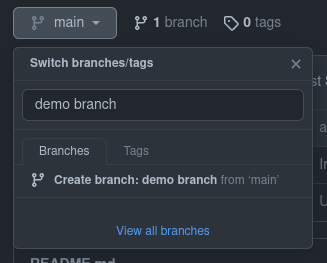
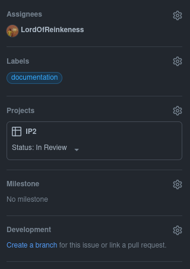

Git(Hub)
Eine kurze Zusammenfassung

- Nur Kommandozeile
- Linux & Mac: Terminal
- Windows: Git Bash
- VS Code Terminal
- Prinzipien in GUI Applikationen die gleichen
- Git gui
- GitHub Desktop
Basics
push, pull, clone ...
clone
- Klont Repository in ein neues Verzeichnis
pull
- Holt die aktuellen Änderungen von der remote
add
- Nimmt lokale Änderungen in die Versionsverwaltung auf
- Dateien in der .gitignore werden ignoriert
stash
- Legt lokale, gestagete Änderungen bei Seite
- Verfügbare Stashes anzeigen
- Stash wiederherstellen
commit
- Fasst die hinzugefügten Änderungen zu einem Snapshot zusammen
- Commit message sollte gut verdeutlichen was sich geändert hat
- NICHT! "made changes"
- Commit message soll englisch sein
push
- Läd commits in die remote hoch
.gitignore
- Definiert Dateien, die nicht in git aufgenommen werden sollen
Branching

Branch wechseln
Neuen Branch anlegen
- Mit der Console
- Der Branch Name soll keine Leerzeichen enthalten
- In der GitHub Web UI

Branch für Issue anlegen
Merging
git merge
- Merged Änderungen aus dem main-Branch in den feature-Branch
- Nie Änderungen in main mergen
git merge

Merge Konflikte
Merge Konflikte
- Dateien mit Konflikten durchgehen
- Ungewünschten Code löschen
- als neuen Commit hochladen
Pull request stellen
- Wie Können Änderungen in main gebracht werden?
- Pull Request (PR)
- Um sicher zu gehen. dass ...
- ... neuer Code reviewed wurde
- ... alle Tests bestanden sind
- ... der Build nicht failt

SSH Keys
SSH-Key erstellen
SSH-Key in GitHub hinzufügen
- ssh Publickey aus dem File kopieren
- ~/.ssh/id_rsa-demo.pub
SSH Config anpassen
- Eventuell mus ssh der Key mitgeteilt werden
- Konfigurationsdatei unter ~/.ssh/config